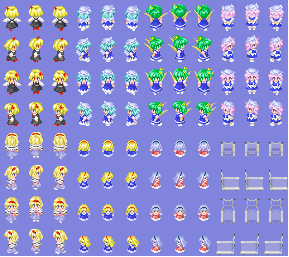

oFrameAnimation类的成员函数，设置某一个显示的图片在原图片上的区域和保持显示的时间。
void SetFrame(oUInt nSubScript,RECT& kRenderRect,oUInt nKeepTime);
参数 nSubScript ——第几个图片
kRenderRect ——该图片在原图片上的矩形区域，用左上角坐标和右下角坐标表示
nKeepTime ——图片持续显示的时间，单位为毫秒
——一个帧动画只用一张图片，在使用这个动画的时候请确保动画的目标已经设置了这张图片，然后你只要在动画里设置每一帧图片是在原图片上的某一个区域，因为原图片可能是这样的，所以只要显示区域改变就能完成图片切换出现动画了